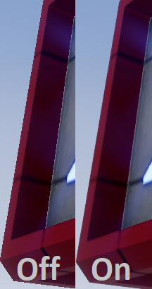
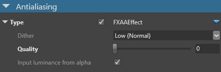

アンチエイリアシング
アンチエイリアシング（Anti-aliasing） は、ギザギザのエッジを滑らかにします。Stride では、ポストプロセッシングで FXAA（Fast-approximate Anti-aliasing）を使用します。FXAAは、パフォーマンスへの影響が少ないシングルパスのスクリーン空間技術です。

Note
現在、Android デバイスでは、アンチエイリアシングのポストエフェクトが正しく動作しません。
Stride には MSAA（マルチサンプル・アンチエイリアシング）も搭載されていますが、これはポストエフェクトではありません。MSAAはフォワードレンダラーのプロパティで有効にすることができます。
プロパティ

| プロパティ | 説明 |
|---|---|
| Dither | ディザの量。ディザを少なくすると良い結果が得られますが、速度は遅くなります。 |
| Quality | エフェクトの質。パフォーマンスに直接影響します。 |
| Input luminance from alpha | 入力色のアルファチャンネルから輝度を取得します。処理速度は遅くなりますが、精度は高くなります。無効にすると、入力色の緑成分が輝度の近似値として使用されます。 |